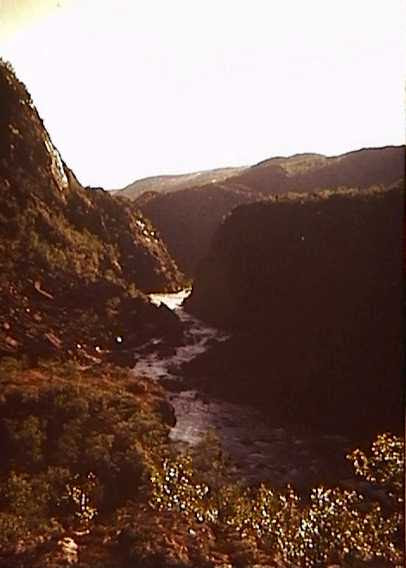

Fillari oli yksivaihteinen, Jupiter-merkkinen jonka ostin omilla rahoilla. Matkalaukku oli Viipurista, jonkilainen evakkoreppu siis. Kuva Lahden läheltä
Olin 18-vuotias.

Ompelin teltan itse. Se oli vain kangasputkilo ilman ovia. Makuupussi oli myös itsetehty, eristeenä vaahtomuovi

Vedin ehkä 70 kilsaa päivässä, matka kesti siis kuukausia. Tutkin kaikki nähtävyydet. Jokaiseen lahoon kolmiomittaustorniin oli myös pakko kiivetä.

Metsät oli täynnä sodan ajan romuja.

Löysin jättikasan näitä saksalaisia tykinammuksia, joita oli yritetty löysästi piilottaa.
Toki löysin myös obligatorisen natsikypärän, jossa sisältäpäin ammuttu luodinreikä

Huoleton tulenkäyttö kostautui, housut paloivat.
Kiipesin tietysti Kolille myös.


Loputonta tundraa ties missä


Ihmeen kirkas on Inarin järvi

Tenojoella

Norjassa, oikealla Polmakin kirkko
Tiet Norjassa eivät olleet erityisemmin ajokunnossa, kaikki liikenne oli vesiteitse


Ajoin myös monta sataa kilsaa jäämeren rantaa Tana Brusta Altaan


Altassa

Alta-joki virtasi tuohon aikaan vapaana.

THE END.